공조냉동기계산업기사 (2010-07-25 기출문제)
1과목: 공기조화
1. 32℃의 외기와 25℃의 환기를 1:2의 비율로 혼합하고 바이패스 팩터가 0.16인 코일로 냉각 재습할 때의 코일 출구온도는? (단, 코일의 표면온도는 14℃이다.)
- 약 14℃
- 약 16℃
- 약 27℃
- 약 29℃
(정답률: 67%)

2. 대기의 절대습도가 일정할 때 하루 동안의 상대습도 변화를 설명한 것 중 올바른 것은?
- 절대습도가 일정하므로 상대습도의 변화는 없다.
- 낮에는 상대습도가 높아지고 밤에는 상대습도가 낮아진다.
- 낮에는 상대습도가 낮아지고 밤에는 상대습도가 높아진다.
- 낮에는 상대습도가 정해지면 하루종일 그 상태로 일정하게 된다.
(정답률: 84%)
3. 가변 풍량 방식에 관한 설명으로 맞는 것은?
- 실내온도제어는 부하변동에 따른 송풍온도를 변화시켜 제어한다.
- 송풍기는 동력절감을 위해 리밋로드 팬을 사용하는 것이 좋다.
- 동시 사용률을 적용할 수 없으므로 설비용량을 줄일 수 없다.
- 시운전시 토출구의 풍량조정이 복잡하다.
(정답률: 58%)
4. 공기조화 방식 중에서 덕트 방식이 아닌 것은?
- 팬코일유니트 방식
- 멀티존 방식
- 각층유니트 방식
- 유인유니트 방식
(정답률: 62%)
5. 노즐형 취출구로서 취출구의 방향을 좌우상하로 바꿀 수 있는 것은?
- 유니버셜형 취출구
- 펑커루버형 취출구
- 팬(pan)형 취출구
- T라인(T-line)형 취출구
(정답률: 81%)
6. 공기의 가습방법으로 맞지 않은 것은?
- 에어워셔에 의해서 단열가습을 하는 방법
- 얼음을 분무하는 방법
- 증기를 분무하는 방법
- 가습팬에 의해 수증기를 사용하는 방법
(정답률: 88%)
7. 전열 교환기에 대한 설명 중 맞지 않는 것은?
- 전열 교환기는 공기 대 공기 열교환기라고도 한다.
- 회전식과 고정식이 있다.
- 현열과 장열을 동시에 교환한다.
- 외기 냉방시에도 매우 효과적이다.
(정답률: 62%)
8. 다음과 같은 사무실에서 방열기 설치위치로 가장 적당한 것은?
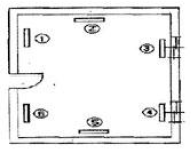
- ①, ②
- ②, ⑤
- ③, ④
- ④, ⑥
(정답률: 89%)
9. 에어필터 효율 측정법이 아닌 것은?
- 중량법
- NBS법
- DOP법
- NTU법
(정답률: 64%)
10. 어느 실내에 설치된 온수 방열기의 방열면적이 10m2 EDR일 때의 방열량은 몇 kcal/h 인가?
- 6200
- 1240
- 2200
- 4500
(정답률: 63%)
11. 증기난방과 관련이 없는 장치는?
- 팽창탱크
- 트랩
- 응축수 탱크
- 강압밸브
(정답률: 67%)
12. 실내 취득 냉방부하가 아닌 것은?
- 재열부하
- 벽체의 축열부하
- 극간풍에 의한 부하
- 유리창의 복사열에 의한 부하
(정답률: 71%)
13. 복사난방에 대한 내용으로 옳지 않은 것은?
- 구조체의 예열시간이 길어져 일시적으로 쓰는 방에는 부적합하다.
- 건물의 축열을 기대할 수 없다.
- 높이에 따른 온도 분포가 균등하고 난방효과가 쾌적하다.
- 바닥에 기기를 배치하지 않아도 되므로 이용공간이 넓다.
(정답률: 69%)
14. 실내의 거의 모든 부분에서 오염가스가 발생되는 경우 실 전체의 기류분포를 계획하여 실내에서 발생하는 오염물질을 완전히 희석하고 확산시킨 다음에 배기를 행하는 환기방식은?
- 자연 환기
- 제2종 환기
- 국부 환기
- 전반 환기
(정답률: 83%)
15. 덕트 설계시 고려하지 않아도 되는 사항은?
- 덕트로 부터의 소음
- 덕크로 부터의 열손실
- 공기의 흐름에 따른 마찰 저항
- 덕트내를 흐르는 공기의 엔탈피
(정답률: 80%)
16. 공조설비에서 사용되는 보일러에 대한 설명으로 적당하지 않은 것은?
- 보일러효율은 연료의 고위발열량을 사용하여 보일러에서 발생한 열량과 연료의 전 발열량과의 비로 나타낸다.
- 관류보일러는 소요 압력의 증기를 빠른 시간에 발생시킬 수 있다.
- 증기보일러로의 보급수는 연수시켜 공급하는 것이 좋다.
- 증기보일러와 120℃ 이상의 온수보일러의 본체에는 안전장치를 설치하여야 한다.
(정답률: 52%)
17. 열교환기로서 공기냉각기에는 냉수를 사용하는 냉수코일과 관내에서 냉매를 증발시키는 직접팽창코일이 사용되는데 직접팽창코일에서 냉매를 각 관에 균일하게 공급하기 위하여 무엇을 사용하는가?
- 온수 헤더
- distributor
- 냉수 헤더
- reverse return
(정답률: 74%)
18. 구조체 에서의 손실부하 계산시 내벽이나 중간층 바닥의 손실 부하를 구하고자 할 때 적용하는 온도차를 구하는 공식은? (단, tr : 실내의 온도, to : 실외의 온도)
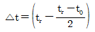
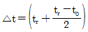
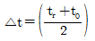
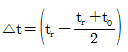
(정답률: 63%)
19. 건구온도 30℃, 상대습도 60%인 습공기에 있어서 건공기의 분압은 약 얼마인가? (단, 대기압은 760mmHg, 포화 수증기압은 27.65mmHg이다.)
- 27.62 mmHg
- 376 mmHg
- 743 mmHg
- 700 mmHg
(정답률: 60%)
20. 흡수식 냉온수기에 대한 설명이다. ( )안에 들어갈 명칭으로 가장 알맞은 용어는?
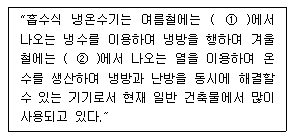
- ①증발기, ②응축기
- ①재생기, ②증발기
- ①증발기, ②재생기
- ①발생기, ②방열기
(정답률: 64%)
2과목: 냉동공학
21. 팽창 밸브 입구에서 330kcal/kg의 엔탈피를 갖고 있는 냉매가 팽창 밸브를 통과허여 압력이 내려가고 포화액과 포화증기의 혼합물 즉, 습증기가 되었다. 습증기 중의 포화 액의 유량이 7kg/min일 때 전 유출 냉매의 유량은 약 얼마인가? (단, 팽창밸브를 지난 후의 포화액의 엔탈피는 54kcal/kg 건포화증기의 엔탈피는 500kcal/kg 이다.)
- 11.3g/min
- 18.4g/min
- 17.4kg/s
- 19.6kg/s
(정답률: 44%)
22. 냉동장치에서 사용되는 각종 제어동작에 대한 설명으로 올바르지 않은 것은?
- 2위치 동작은 스위치의 온, 오프 신호에 의한 동작이다.
- 3위치 동작은 상, 중, 하 신호에 따른 동작이다.
- 비례동작은 입력신호의 양에 대응하여 제어량을 구하는 것이다.
- 다위치 동작은 여러 대의 제어기기를 단계적으로 운전 또는 정지시키기 위한 것이다.
(정답률: 83%)
23. 염화나트륨 브라인의 공정점은 몇 ℃인가?
- -55℃
- -42℃
- -36℃
- -21℃
(정답률: 70%)
24. 다음의 팽창밸브 중 냉매증기의 과열도가 원인이 되어 작동되는 것은?
- 정압식 팽창밸브
- 온도식 자동팽창밸브
- 부자식 팽창밸브
- 모세관
(정답률: 81%)
25. 다음 냉동기의 종류와 원리가 잘못 연결된 것은?
- 증기압축식 - 냉매의 증발잠열
- 증기분사식 - 진공에 의한 물 냉각
- 전자냉동법 - 전류흐름에 의한 흡열작용
- 흡수식 - 프레온냉매의 증발잠열
(정답률: 69%)
26. 다음은 냉동기 윤활유의 구비조건이다. 틀린 것은?
- 저온도에서 응고하지 않고 왁스(wax)를 석출하지 않을 것
- 인화점이 낮고 고온에서 열화하지 않을 것
- 냉매에 의하여 윤활유가 용해되지 않을 것
- 전기 절연도가 클 것
(정답률: 75%)
27. 냉동사이클 중 P-h 선도로 계산할 수 없는 것은?
- 냉동능력
- 성적계수
- 냉매순환량
- 마찰계수
(정답률: 84%)
28. 스크류 냉동기의 특징을 설명한 것이다. 맞지 않는 것은?
- 경부하 운전 시 비교적 동력 소모가 적다.
- 크랭크사프트, 피스톤링, 컨넥팅로드 등의 마모부분이 없어 고장이 적다.
- 소형으로서 비교적 큰 냉동능력을 발휘할 수 있다.
- 회전식이라도 단단에서도 높은 압축비까지 운전할 수 있다.
(정답률: 65%)
29. 다음 중 카르노 사이클(Carnot cycle)의 가역과정 순서를 올바르게 나타낸 것은?
- 등온팽창 → 단열팽창 → 등온압축 → 단열압축
- 등온팽창 → 단열압축 → 단열팽창 → 등온압축
- 등온팽창 → 등온압축 → 단열압축 → 단열팽창
- 등온팽창 → 단열팽창 → 단열압축 → 등온압축
(정답률: 78%)
30. 역카르노 사이틀로 작동하는 냉동기가 35마력의 일을 받아서 저온체로부터 25kcal/s의 일을 흡수한다면 고온체로 방출하는 열량은 약 얼마인가? (단, 1마력은 632.3kcal/h로 한다.)
- 21.15kcal/s
- 31.15kcal/s
- 41.15kcal/s
- 61.25kcal/s
(정답률: 50%)
31. 일반 물(순수 H2O) 1kg을 0℃ 얼음으로 만들 때 동결 잠열은 얼마인가?
- 79.68 kcal/kg
- 79.68 kcal/g
- 79.68 cal/kg
- 89.68 kcal/kg
(정답률: 77%)
32. 냉동냉장 창고의 부하산출시 고려해야할 열량 중 가장 관계가 없는 것은?
- 방열벽을 통한 침입 열량
- 물품의 냉각열량
- 작업자 발생열량
- 실내공기 증발 잠열
(정답률: 48%)
33. 다음 중 암모니아 냉매를 대형장치에서 많이 사용하고 있는 원인으로 생각될 수 없는 것은?
- 냉동효과가 크기 때문
- 가격이 싸기 때문
- 폭발의 위험이 없기 때문
- 증발잠열이 크기 때문
(정답률: 77%)
34. 암모니아 냉동장치에서 압축기의 토출압력이 높아지는 이유로 틀린 것은?
- 흡입변과 변좌간에 이물질이 끼었다.
- 냉매중에 공기가 섞여있기 때문이다.
- 응축기와 압축기를 순환하는 냉각수가 부족했기 때문이다.
- 장치내에 냉매가 과잉 충진 되었기 때문이다.
(정답률: 41%)
35. 다음 중 모세관 사용 시 주의점으로 틀린 것은?
- 가능한 고압측 액부분에 설치할 것
- 수냉식 콘덴싱 유니트에는 사용하지 말 것
- 규격은 장치에 적합한 것을 사용할 것
- 냉매 충전량을 가능한 적게 할 것
(정답률: 45%)
36. 단열압축에 대한 설명 중 옳지 않은 것은?
- 공급되는 열량은 0 이다.
- 공급된 일은 기체의 엔탈피 증가로 보존된다.
- 단열 압축전 보다 온도, 비체적이 증가한다.
- 단열 압축전 보다 압력이 증가한다.
(정답률: 56%)
37. 다음 증발기의 종류 중에서 전열효과가 가장 좋은 것은?
- 플레이트형 증발기
- 팬 코일식 증발기
- 나관 코일식 증발기
- 쉘튜브식 증발기
(정답률: 64%)
38. 축열시스템에 대한 설명이 잘못된 것은?
- 수축열방식 : 열용량이 큰 물을 축열제로 이용하는 방식
- 빙축열방식 : 냉열을 얼음에 저장하여 작은 체적에 효율적으로 냉열을 저장하는 방식
- 잠열축열방식 : 물질의 융해, 응고시 상변화에 따른 잠열을 이용하는 방식
- 토양축열방식 : 심해의 해수온도 및 해양의 축열성을 이용하는 방식
(정답률: 76%)
39. 냉동 능력 1RT이며, 압축할 때 1kW의 동력이 소요되는 냉동장치가 있다. 응축기에서 방출량은 몇 kcal/h인가? (단, 1RT=3320kcal/h, 1kW=860kcal/h 이다.)
- 2460
- 3320
- 4180
- 5780
(정답률: 59%)
40. 압축기의 클리어런스가 크면 다음과 같은 현상이 일어난다. 그 중 해당되지 않는 것은?
- 냉동능력이 감소한다.
- 체적효율이 저하한다.
- 토출가스 온도가 낮아진다.
- 윤활유가 열화 및 탄화된다.
(정답률: 82%)
3과목: 배관일반
41. 다음 배관 중 보온 및 보냉을 필요로 하는 곳은?
- 방열기 주위배관
- 각종 탱크류의 오버 플로우관
- 환기용 덕트
- 냉ㆍ온수 배관
(정답률: 81%)
42. 다음 중 동관이음 방법의 종류가 아닌 것은?
- 빅토릭 이음
- 플레어 이음
- 용접 이음
- 납땜 이음
(정답률: 79%)
43. 배수관의 관경결정에서 기구배수/부하단위의 기준이 되는
- 세면기 배수량
- 대변기 배수량
- 소변기 배수량
- 싱크대 배수량
(정답률: 70%)
44. 배관재료를 선정할 때 고려해야할 사항으로 가장 관계가 적은 것은?
- 사용압력
- 유체의 온도
- 부식성
- 유체의 비열
(정답률: 73%)
45. 가스배관을 실내에 설치할 때의 기준으로 틀린 것은?
- 배관은 환기가 잘 되는 곳으로 노출하여 시공할 것
- 배관은 환기가 잘되지 아니하는 천정ㆍ벽ㆍ공동구 등에는 설치하지 아니할 것
- 배관의 이음부와 전기 계량기와는 60cm 이상 거리를 유지할 것
- 배관 이음부와 단열조치를 하지 않은 굴뚝과의 거리는 5cm 이상의 거리를 유지할 것
(정답률: 79%)
46. 다음 중 순환식 덕트의 장점이 아닌 것은?
- 실내의 온ㆍ습도가 균일하다.
- 실내의 청정도가 좋고 소음이 적다.
- 덕트가 차지하는 스페이스가 작다.
- 유지관리가 용이하다.
(정답률: 70%)
47. 강관의 표시기호 중 상수도용 도복장 강관은?
- STWW
- SPPW
- SPPH
- SPHT
(정답률: 59%)
48. 암모니아 냉매 사용시 일반적으로 사용하는 배관재료는?
- 알루미늄 합금관
- 동관
- 아연관
- 강관
(정답률: 74%)
49. 급탕설비에서 팽창관에 관한 설명으로 틀린 것은?
- 보일러 등 배관계에 있는 온수의 체적팽창을 도피시키는 역할을 한다.
- 팽창량을 조절하기 위하여 배관도중에 밸브를 설치한다.
- 설비 시스템 내에서 발생되는 공기나 증기도 배출시킨다.
- 관의 지름은 겨울철 동결을 고려하여 25mm 이상이 바람직하다.
(정답률: 69%)
50. 방열기 주변의 신축이음으로 적당한 것은?
- 스위블 이음
- 미끄럼 신축이음
- 루프형 신축이음
- 벨로즈식 신축이음
(정답률: 80%)
51. 다음 보온재의 사용온도 범위로 옳지 않은 것은?
- 규산칼슘 : 650℃이하
- 우모펠트 : 100℃이하
- 탄화코르크 : 200℃이하
- 탄산마그네슘 : 250℃이하
(정답률: 55%)
52. 스팀헤더(steam header)의 사용목적으로서 가장 적합한 것은?
- 배관내의 압력을 조절하기 위하여
- 증기의 유량배분을 원활하게 하기 위하여
- 열매의 효율을 높이기 위하여
- 배관내의 부식방지를 위하여
(정답률: 71%)
53. 동일 송풍기에서 임펠러의 지름을 2배로 했을 경우 특성 변화의 법칙에 대하 옳은 것은?
- 풍량은 크기비의 2제곱에 비례한다.
- 정압은 크기비의 3제곱에 비례한다.
- 동력은 크기비의 5제곱에 비례한다.
- 회전수 변화에만 특성변화가 있다.
(정답률: 73%)
54. 급수 설비배관에서 수평 배관에 구배를 주는 이유로 적당하지 않은 것은?
- 시공 및 재료비 감소
- 관내유수의 흐름 원활
- 공기 정체 방지
- 장치 전체 수리 시 물을 완전히 배수
(정답률: 78%)
55. 강관의 나사접합 시 주의사항으로 틀린 것은?
- 파리프커터 보다는 쇠톱으로 관을 절단하는 것이 좋다.
- 나사부의 길이는 필요이상으로 길게 하지 않는다.
- 나사 절삭후 연결부속은 순서적으로 접합하여 필요 개소에 분해 가능한 유니온 등을 설치한다.
- 연결부속을 나사부에 끼우기 전에 마를 충분히 감아 주는게 좋다.
(정답률: 61%)
56. 급수관의 지름을 결정할 때 급수 본관인 경우 관내의 유속은 일반적으로 어느 정도로 하는 것이 가장 좋은가?
- 1~2m/s
- 3~6m/s
- 10~15m/s
- 20~30m/s
(정답률: 76%)
57. 배관이 바닥이나 벽 등을 관통할 때는 슬리브를 사용하는데 그 이유로서 가장 적당한 것은?
- 방진을 위하여
- 신축흡수 및 수리를 용이하게 하기위하여
- 방식을 위하여
- 수격작용을 방지하기 위하여
(정답률: 85%)
58. 도시가스 배관을 매설할 경우 기준으로 틀린 것은?
- 배관의 외면으로부터 도로의 경계까지 1m 이상 수평거리를 유지할 것
- 배관을 철도부지에 매설하는 경우에는 배관의 외면으로부터 궤도 중심까지 4m 이상 거리를 유지할 것
- 시가지외의 도로노면 밑에 매설하는 경우에는 노면으로부터 배관의 외면까지 깊이를 1m 이상으로 할 것
- 인도 등 노면외의 도로 밑에 매설하는 경우에는 지표면으로부터 배관의 외면까지 깊이를 1.2m 이상으로 할 것
(정답률: 73%)
59. 증기난방에서 고압식인 경우 증기 압력은?
- 0.15 ~ 0.35 kgf/cm2 미만
- 0.35 ~ 0.72 kgf/cm2 미만
- 0.72 ~ 1 kgf/cm2 미만
- 1 kgf/cm2 이상
(정답률: 83%)
60. 냉매배관 시공 시 주의사항으로 틀린 것은?
- 배관재료는 각각의 용도, 냉매종류, 온도 의해 선택한다.
- 배관 곡관부의 곡률 반지름은 가능한 한 크게 한다.
- 배관이 고온의 장소를 통과할 때는 단열조치 한다.
- 기기상호간 배관길이는 되도록 길게 하고 관경은 크게 한다.
(정답률: 81%)
4과목: 전기제어공학
61. 그림과 같은 논리회로의 출력 Y는?
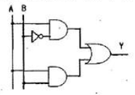
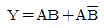
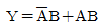
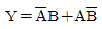
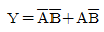
(정답률: 76%)
62. 다음 중 압력을 변위로 변환시키는 장치로 알맞은 것은?
- 노즐플래퍼
- 다이어프램
- 전자석
- 차동변압기
(정답률: 69%)
63. 그림과 같은 그래프에 해당하는 함수를 라플라스 변환하면?
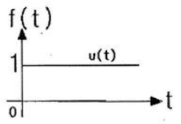
- 1
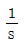
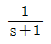
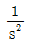
(정답률: 58%)
64. 제어동작에 대한 설명 중 틀린 것은?
- ON-OFF동작 : 제어량이 설정값과 어긋나면 조작부를 전폐 또는 전개하는 것
- 비례동작 : 검출값 편차의 크기에 비례하여 조작부를 제어하는 것
- 적분동작 : 적분값의 크기에 비례하여 조작부를 제어하는 것
- 미분동작 : 미분값의 크기에 비례하여 조작부를 제어하는 것
(정답률: 50%)
65. 저항 3Ω과 유도이랙컨수 4Ω이 직렬로 연결된 회로에
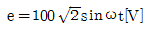
인 전압을 가하였을 대 이 회로에서 소비하는 전력은 몇 [kW] 인가?- 1.2
- 2.2
- 3.2
- 4.2
(정답률: 32%)
66. 그림과 같은 피드백 블록선도의 전달함수는?
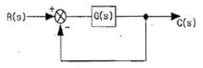
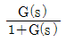
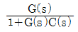
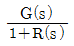
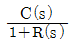
(정답률: 75%)
67. 어떤 도체의 임의의 단면을 5초 동안에 10C의 전하가 일정하게 이동하였다면 이때 흐르는 전류의 크기는 몇[A]인가?
- 2
- 20
- 30
- 50
(정답률: 60%)
68. 다음은 분류기이다. 배울은 어떻게 표현되는가? (단, Rs : 분류기의 저항, Ra : 전류계의 내부저항)
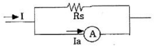
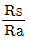
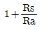
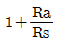
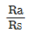
(정답률: 61%)
69. 피드백 제어계의 구성요소 중 동작신호에 해당되는 것은?
- 기준입력과 궤환신호의 차
- 제어요소가 제어대상에 주는 신호
- 제어량에 영향을 주는 외적 신호
- 목표값과 제어량의 차
(정답률: 59%)
70. 부하전류가 100A일 때 900rpm으로 10Nㆍm의 토크를 발생하는 직류직권전동기가 50A의 부하전류로 감소되었을 때 발생하는 토크는 약 몇 [Nㆍm]인가?
- 2.5
- 3.2
- 4
- 5
(정답률: 32%)
71. 다음 중 제어기의 설명으로 틀린 것은?
- PD 제어기 : 응답속도 개선
- PI 제어기 : 외란에 의한 잔류편차 제어 불가
- P 제어기 : 잔류편차 발생
- D 제어기 : 오차확대 방지
(정답률: 69%)
72. 서로 같은 방향으로 전류가 흐르고 있는 두 도선 사이에는 어떤 힘이 작용하는가?
- 서로 미는 힘
- 서로 당기는 힘
- 하나는 밀고, 하나는 당기는 힘
- 회전하는 힘
(정답률: 65%)
73. 기준권선과 제어권선의 두 고정자권선이 있으며, 90도 위상차가 있는 2사 전압을 인가하여 회전자계를 만들어서 회전자를 회전시키는 전동기는?
- AC 서보전동기
- 동기전동기
- 유도전동기
- 스탭전동기
(정답률: 76%)
74. 권선형 3상유도전동기의 비례추이에 관한 설명으로 가장 알맞은 것은?
- 2차저항 r2를 변화하면 최대 토크를 발생하는 슬립이 커진다.
- 2차저항 r2를 크게 하면 기동 토크가 감소한다.
- 2차저항 r2를 변화하면 최대 토크가 변화한다.
- 2차저항 r2를 크게 하면 기동 전류가 증대한다.
(정답률: 49%)
75. 제어량을 어떤 일정한 목표값으로 유지하는 것을 목적으로 하는 제어법은?
- 추종제어
- 비율제어
- 정치제어
- 프로그램제어
(정답률: 66%)
76. 피드백(Feedback) 제어의 특징이 아닌 것은?
- 제어량 값을 일치시키기 위한 목표값이 있다.
- 입력측의 신호를 출력측으로 되돌려 준다.
- 제어신호의 전달 경로는 폐루프를 형성한다.
- 측정된 제어량이 목표치와 일치하도록 수정 동작을 한다.
(정답률: 60%)
77. 복잡한 가공형상이라도 균일하게, 그리고 빠른 속도로 절삭하는 공작기계의 가공에 적용되는 제어의 방법은?
- 속도제어
- 수치제어
- 정치제어
- 최적제어
(정답률: 63%)
78. 동작신호를 조작량으로 변환하는 요소로서 조절부와 조작부로 이루어진 요소는?
- 기준입력 요소
- 동작신호 요소
- 제어 요소
- 피드백 요소
(정답률: 72%)
79. i=2t2+8t[A]로 표시되는 전류가 도선에 3초 동안 흘렸을 때 통과한 전체 전기량은 몇 [C]인가?
- 18
- 48
- 54
- 61
(정답률: 54%)
80. kVA는 무슨 단위인가?
- 전력량
- 역률
- 효율
- 피상전력
(정답률: 70%)
코일의 표면온도는 14℃이므로, 냉각 재습 공기가 코일을 통과할 때 14℃로 냉각되고, 외기가 코일을 통과할 때는 25℃에서 32℃의 공기와 혼합되므로 평균적으로 약 28.5℃로 냉각된다.
따라서, 냉각 재습 공기와 외기가 혼합된 공기의 온도는 0.138×14℃ + 0.862×28.5℃ = 약 26.5℃이다. 이 공기가 코일을 통과하면서 냉각되므로, 코일 출구온도는 약 26.5℃보다는 낮을 것이다.
하지만, 바이패스 팩터가 작기 때문에 냉각 재습 공기의 비중이 작아서 코일 출구온도는 외기와 비슷하게 나올 것이다. 따라서, 약 16℃이 정답이다.